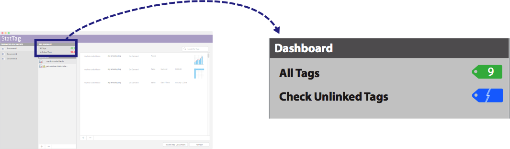
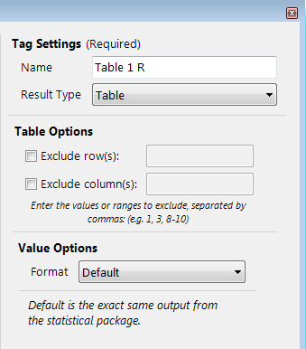
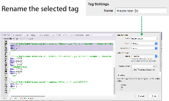

User’s Guide for macOS with Stata and R
Table of Contents
3.2 Navigating StatTag for macOS
3.3 Interacting with the StatTag for macOS interface
5.3 Formatting after insertion
Appendix A. Future Enhancements
Appendix C. Frequently Asked Questions
Let’s Stay in Touch!
The StatTag team appreciates all feedback and would love to hear from you!
In particular:
1. Did you find StatTag easy to use? Was it intuitive?
2. Did StatTag function as expected? Were you able to incorporate your working statistical package code? Were you able to tag documents?
3. Did you encounter any errors? If so, what happened? Can you tell us how to reproduce them?
Please email your feedback to: StatTag@northwestern.edu
You can also reach us on Twitter: http://twitter.com/openstattag

Open and Free
StatTag is open source and provided for free, courtesy of Northwestern University under a grant by the National Institutes of Health.
Visit us on GitHub: http://github.com/stattag
1.0 Introduction
StatTag is user-friendly software that integrates statistical code with document preparation in Microsoft Word. StatTag facilitates reproducible research by connecting Word documents, such as a manuscript, to associated statistical code. Word documents prepared with StatTag are reproducible dynamic documents: statistical results in the document can be automatically updated if either statistical code or data change. In addition, StatTag allows statistical code to be edited directly from Microsoft Word.
StatTag is provided as a free app written in Objective-C. Once installed, StatTag is accessible from the Word toolbar or through the standalone application. This user’s guide covers use of StatTag within a macOS environment for Microsoft Word partnered with:
· Stata (StataCorp. 2015. Stata Statistical Software: Release 14. College Station, TX: StataCorp LP),
· R (R Foundation for Statistical Computing. 2015. R version 3.5.1. Vienna, Austria), and
· R Markdown (R Studio. 2016. R Studio Inc.: R version 3.5.1. Vienna, Austria)
Requirements
StatTag requires the following
· macOS 10.10 and above
· Microsoft Word 2016
· One or more supported statistical applications
o Stata 13 and above
o R
o R Markdown (R Studio, R)
Note: StatTag should work with Microsoft Word 2011, but for this release we do not supply a toolbar for more user-friendly integration.
2.0 Setup
1. Download the StatTag software file at http://www.stattag.org
2. Install the software by simply dragging and dropping the program in your Applications directory.
3. Enable the StatTag Toolbar for Word
(1) Launch StatTag (StatTag will automatically launch Microsoft Word if it is not already running)
(2) On first launch, StatTag should prompt you to install a Word toolbar
(3) You will need to close and restart Word in order for the Word toolbar to activate
Note: If you should wish to remove or reinstall the toolbar for Word, you can do so from within StatTag via the “StatTag” menu’s “Install Word Toolbar” and “Remove Word Toolbar” options.
3.0 Basics of StatTag
StatTag will link any code file written for supported statistical applications (Stata (.do), R (.R) R Markdown (.Rmd)) with your Word document, run the code file from Word, and insert any tagged results.
There are three main steps to using StatTag:
1. Link code file(s). Connect a Word document to files containing statistical code (i.e. .do or .R file).
2. Create tags. Annotate the code files to tag results, tables, or figures that are of interest.
3. Insert tags. Instruct StatTag where to insert those results within the Word document itself.
Note: We recommend that you begin with a code file that already contains your working statistical code and generates the results of interest. With StatTag, it is possible to write your statistical code directly from Word, but not as convenient as writing your code files in the statistical program’s editor.
Note: This guide uses example code files to explain the use of StatTag. The example code files are available from https://github.com/StatTag/Simple-Code-Examples, along with raw data and a Word document ready for tags to be embedded. To follow along with the User Guide, open the Word document.
3.1 StatTag Elements
Microsoft Word Document
A Word document represents the “hub” for your team’s document authoring. Word provides the document formatting and editing tools.
Code File
A Code File is text file with commands that are intended to run in any of the supported statistical applications (currently Stata, R, R Markdown, and possibly Matlab or other programs in future releases)). A code file is the source file that your project or study uses to compute findings from data sets. With StatTag, code files are “linked” to Microsoft Word documents so that they can be imported and used. The code files are read so that you can identify sections that produce output that you wish to embed in Word.
Tag
A Tag is a unit of statistical output from your Code File that you would like to treat as a unique, reproducible data element. Tags in your code file(s) identify numbers, tables, figures, or verbatim output (raw output from the statistical program console) that you would like to embed in your Word document.
A tag is defined by three components, which make up the “identity” for a tag:
· Code File: The source statistical code file where the tag is defined
· Tag name: The unique, user-friendly name for a tag
· Tag format: The combination of attributes that define how a tag’s output should be formatted within a Microsoft Word document
3.2 Navigating StatTag for macOS
StatTag for macOS performs the same functions as StatTag for Windows, but with a user interface more consistent with macOS. There are fewer buttons, but all of StatTag’s core capabilities.
The StatTag Word Toolbar (Word 2016)
We suggest installing the StatTag toolbar for Microsoft Word. It makes interaction with StatTag easier and more reliable. The StatTag toolbar has two groups of buttons which provide quick access to key functions

Manage Functions
|
|
Code Files |
Opens the Code Files Manager. See “Code Files Manager” below in Section 3.3. |
|
|
Tags |
Opens the Tag Manager. See “Tag Manager” below in Section 3.3. |
|
|
View Tag |
After selecting a Tag, clicking on this icon will open the Tag definition editor. See “Tag Editor” below in Section 3.3. |
Support Functions
|
Settings |
Opens the Settings window. See “Settings” below. |
|
|
|
About |
Opens the About window. See “About” below. |
|
|
Help |
Opens StatTag’s help documentation. See “Help” below. |
Settings
The Settings window controls aspects of StatTag’s operation.
This button opens an interface to enable logging which controls generation of a log file that can be used for troubleshooting. This is disabled by default, but if you encounter errors and would like to request assistance please do the following: (1) enable the debug file, by checking the box, which will write a plain text file to your computer; (2) run your program to generate the errors, and; (3) send the debug file to StatTag@northwestern.edu.
About
The About icon will open a window containing the version number of StatTag that you are using, and information regarding citation, usage, and licenses related to StatTag.
Help
The Help icon will open the User Guide from within Word. If you need additional help or support, email StatTag@northwestern.edu or visit the StatTag website at http://sites.northwestern.edu/stattag/ to interact with the user community.
Within the StatTag application, the Help menu has two options.
StatTag Help
The core content from this document can be found under the “Help” menu. It provides an overview of StatTag’s key concepts and the basic steps to get started.

Downloading StatTag Samples
StatTag provides sample code files for several statistical applications as well as sample Microsoft Word documents to demonstrate their use. The samples are stored online and distributed via GitHub (https://github.com/StatTag/Simple-Code-Examples).
Users can download and extract these sample files from directly within StatTag.

1. Ensure your computer is connected to the Internet.
2. Select “Download Latest StatTag Samples” from the “Help” menu.
3. Review the location where the samples will be downloaded. By default this is your “Downloads” directory. You may change this location to any folder you can access.
4. Click “Install Samples”
The StatTag Application Interface
In addition to the Word Toolbar, StatTag installs as an independent application, with its own interface. The interface organizes four panels.
|
Word Document Browser |
Displays a list of documents currently open in Microsoft Word. |
|
|
|
|
Tag Summary Dashboard |
Provides an overview of each Word document’s tags. |
|
|
|
|
Code Files Manager |
Lists the code files associated with your active Word document. |
|
|
|
|
Tag Manager |
An interface to insert tags, work with existing tags, and remove tags from the active Word document. |
3.3 Interacting with the StatTag for macOS interface
Word Document Browser
All Microsoft Word documents currently open on your computer will be displayed here. Clicking on a Word document will activate it in StatTag, loading all code files and associated tag information in the other panels.

Tag Summary Dashboard
This panel will show summary information for any tags in the active Word document. It will display any of three options, depending on what is in your document:
· “All Tags” – A count of the active tags available from code files linked to your Word document. Clicking on “All Tags” will open a list of all Tags currently available for use in your Code Files.
· “Unlinked Tags” – Tags which are used in your Word document, but which are not found in any of the linked code files. Clicking on “Unlinked Tags” will open a list of the tags which are in your Word document, but cannot be found in your project’s accessible Code Files.
· “Duplicate Tags” – Any tag names that are reused within the same code file. Clicking on “Duplicate Tags” will open a list of Tag names which are duplicated either within or across your Code Files. See “Duplicate Tags” below.
· “Overlapping Tags” - Tags can overlap if the code is edited outside of StatTag and a tag becomes embedded within another tag.

Code Files Manager
The Code Files function enables linking one or more code files with your Word document. The first step to using StatTag is to connect your Word document with your statistical code. Note that it is possible to connect multiple code files to one Word document, and you may use code files from Stata, R, and/or R Markdown in a single document. This panel will show any code files currently linked to you active Word document.
You can:
· View a list of code files currently associated with your document
· Attach or remove code files using the macOS-standard (+) and (-)(delete) buttons
· Attach or remove code files by dragging/dropping code files into the StatTag code file list from Finder

Note: You can connect multiple code files to a single Word document.
Tag Manager
Clicking on a code file or selecting multiple code files will cause the Tags Manager to display tags associated with the selected code file(s). From the activity panel, tags can be managed (define, add, remove), inserted, and refreshed.

The Tag Manager has the following components:
A. Defined Tags
i. All tags defined in the code file(s) are displayed. Tags are shown for all code files actively selected in the Code Files pane.
B. Add or Remove
i. These functions are used to define new tags (+) or remove tag(s) (-) from the code file(s)
C. Insert and Update
i. These functions are used to insert or refresh selected tags.
Tag Editor
The tag editor drives interaction with StatTag. It is where tags are defined within a referenced code file and information is added to enable StatTag to link output to your Microsoft Word document. Selecting the Add (+) button or double clicking on an existing tag will open the Tag Editor.

The Tag Editor has the following components:
A. Code File
i. If you have only 1 code file linked to your Word document, this will be automatically selected in the drop down menu
ii. If you have 2 or more code files linked to your document, use the drop down menu to select the code file you are using to make the new tags.
B. Text editor
i. The statistical code may be edited directly though StatTag. Any changes you make are made to the file itself and are saved once you press the “Save” button.
C. Tag Name
ii. The tag name is the unique name of the result of interest, and should only be used once within each code file to identify a result. StatTag will warn you if you try to use a tag name more than once.
iii. The tag name can contain any string of characters including special characters (with the exception of the pipe, |) and spaces.
D. Result Type
i. This section informs StatTag if the tag will be a value, figure, table, or verbatim output.
ii. More information on tags for tables, figures and verbatim output is provided in Section 4.
E. Format
i. Formatting options are specific to the type of result inserted.
ii. More information on formatting is provided in Section 5.
3.4 Managing Tags
The Tag Manager will become active when a code file is selected or the “All Tags” option is selected in the Tag Summary panel. Selecting one or more code files will filter the list of displayed tags.
Tags in your code file(s) identify numbers, tables, figures, or verbatim output (i.e. raw output from the statistical program console) that you would like to embed in your Word document. Tags can be inserted through StatTag, using the following instructions, or for the more advanced user, can be directly written into your code files using a text editor of the user’s choice. Tags are specifically formatted text that Stata or R interpret as comments, but that allows StatTag to pull results into Word.
Adding Tags
1. Activate the Tag Manager by clicking on a Code File or selecting All Tags
2. Click on the add (+)(⌘+) button.
3. The Tag Editor window opens showing the statistical code.
4. After a tag has been defined, click Save or Save and define another.
Information on adding tags is described in greater detail in Section 4.3.
Removing Tags
1. Activate the Tag panel by clicking on a Code File or selecting All Tags
2. Select the tag(s) you wish to remove from the code file by clicking on them once
3. Click on the remove (-)(delete) button.
Tip: To select multiple tags hold the (shift) key while clicking and selecting a range of tags
Modifying Tags
1. Activate the Tag panel by clicking on a Code File or selecting All Tags
2. Select the tag you wish to modify by double-clicking on the tag to open the Tag Editor
3. Modify the tag settings and select save
Inserting Tag Placeholders
1. Select one or more tags in the tag list.
2. Click on the “Insert X Tag Placeholders” button.
3. This action inserts a placeholder for the tag, which consists of the tag name in brackets (e.g. “[my tag name]”) in your Word document. This allows you to insert many tags without ever running the statistical code file.
4. You will see a progress bar while the tags process and, finally, feedback if there were issues.
Updating Tags
1. Select one or more tags in the tag list.
2. Click on the “Update X Tag Results” button.
3. This action will run the code file and fills in placeholders (or updates existing tags) within the Word document.
4. You will see a progress bar while the tags process and, finally, feedback if there were issues.
Inserting Figure Tags (Microsoft Word 2016)
When inserting figure tags, Microsoft Word 2016 will prompt you to allow it to access the related figure graphic. This is by design. Microsoft Word 2016 for macOS uses a security technology known as the “Apple Sandbox.” It is designed to help protect users and prevents applications from arbitrarily accessing files on the user’s computer.
When StatTag asks Microsoft Word 2016 to insert a figure / image, the Apple Sandbox obligates Word to first obtain permission to access the image on user’s computer. Apple’s security system asserts itself as a “stop sign” before allowing Word to proceed.
Word will notify the user of the request and ask that they authorize access to the file:

Once you click on the image and hits the “Select” button, a window will open and the requested file will be presented. You must then click “Grant Access” to allow Word to insert the image.

This is done once per file. After the user has authorized Microsoft Word to access a file, that decision is stored for future use. Subsequent requests to access that file from within Microsoft Word are automatically approved. If a figure is refreshed or another code file references the same file, the no further approval is required.
4.0 Defining Tags
4.1 Structure
A Tag is a unit of statistical output from your Code File that you would like to treat as a unique, reproducible data element. Tags in your code file(s) identify numbers, tables, figures, or verbatim output (raw output from the statistical program console) that you would like to embed in your Word document.
A tag is defined by three components, which make up the “identity” for a tag:
· Code File: The source statistical code file where the tag is defined
· Tag name: The unique, user-friendly name for a tag
· Tag format: The combination of attributes that define how a tag’s output should be formatted within a Microsoft Word document
Tag names should be unique within code files and, ideally, unique across the document (although the latter is not required, it’s suggested to avoid potential confusion and so that it’s easier for users to quickly identify tags). Four types of results can be tagged.
|
Type |
|
or |
|
Numeric Values |
display |
Any command that returns a value |
|
Tables |
matrix list |
Any command that returns a data frame, matrix, vector or list |
|
Figures |
graph export |
pdf, win.metafile, png, jpeg, bmp, postscript |
|
Verbatim |
Any Code |
Any Code |
Tip: When using an R Markdown file, the code must be contained within “code chunks”. Inline code is not supported by StatTag. If an R Markdown code file has the same file name and pathway as an R code file, you should rename one or the other.
In order to return results from your statistical analysis to Word, your results must be created and either printed to the results window of your statistical program or to file through one of the above commands, and encapsulated in a tag. Other lines in your statistical code should not be encapsulated by tags, as they may cause errors.
Values
Values are returned to StatTag and then inserted into Word with the display (Stata) command or R commands that return a number. The display command is used in Stata code to print strings or scalar values to the results window. This command will not return data in any other format, such as a matrix or table.
 The display command is
typically used in Stata code with the return command to retrieve stored
results, or with local or global macro variables.
The display command is
typically used in Stata code with the return command to retrieve stored
results, or with local or global macro variables.
R commands that return a single value (e.g., print) may be used. If the value returned has more than one element (such as a vector), only the first element will be used.
Tables
Tables are returned to Word with the matrix list (Stata) command or R commands that return a collection of values.
 The matrix list command is
used in Stata code to print a matrix to the results window. The matrix list
command is typically used after creation of a matrix with the mkmat, matrix define, estout,
or estimates
table commands.
The matrix list command is
used in Stata code to print a matrix to the results window. The matrix list
command is typically used after creation of a matrix with the mkmat, matrix define, estout,
or estimates
table commands.
R commands that return a collection of values (data frame, matrix, vector, or list) can be used as table results by StatTag.
Figure
Figures are returned to Word with the graph export (Stata) command or common file format commands other than pdf (R).
 The graph export command is
used in Stata code to save a graph or figure to file outside of Stata, the
location of which is specified by the user. StatTag will retrieve the file to
insert into Word. The graph export command expects a pathway and file
name to be specified along with the file format, and the replace option to
overwrite an existing file as required. The command will export the last graph
rendered in Stata.
The graph export command is
used in Stata code to save a graph or figure to file outside of Stata, the
location of which is specified by the user. StatTag will retrieve the file to
insert into Word. The graph export command expects a pathway and file
name to be specified along with the file format, and the replace option to
overwrite an existing file as required. The command will export the last graph
rendered in Stata.
The win.metafile, png, jpeg, bmp and postscript commands are used by R to save a graph or figure to a file outside of R, the location of which is specified by the user. StatTag will retrieve the file to insert into Word. StatTag cannot currently return a document generated with pdf.
Verbatim
Verbatim results echo any printed output within the statistical program. Inserted output will be formatted text in a text box. The inserted text may be further formatted in Word.
 Tagging code as verbatim in
Stata will result in the insertion of any output printed to the Stata results
screen.
Tagging code as verbatim in
Stata will result in the insertion of any output printed to the Stata results
screen.
Tagging code as verbatim in R will result in the insertion of any output printed to the R console.
4.2 Syntax
A tag always starts with **>>>ST:Value(Label=" ")and may contain additional information based on the type of tag (number, table, or figure) it identifies. The tag always ends with **<<<. Examples of tags for a numeric value, a table, a figure and verbatim output are listed below.
**>>>ST:Value(Label=" ", Type="")
code
**<<<
**>>>ST:Table(Label="",Type="",AllowInvalid=True,Decimals=0,Thousands=False)
code
**<<<
**>>>ST:Figure(Label="")
code
**<<<
**>>>ST:Verbatim(Label="")
code
**<<<
If tags are made through StatTag, the text (“***>>> …. **<<<”) will be written into your statistical code by the plug-in. The Label, Type and Table parameters are inserted with the opening and closing tags by StatTag. For the more advanced user, you can also directly write tags into your statistical code. If written by hand in the statistical code, you must write both the opening and closing tags, and provide a tag name for each tag.
Note: Tags cannot be nested within each other. A tag should encapsulate exactly one keyword command (i.e. display, matrix list, etc.)
4.3 Process
Tags are defined and inserted through the Tag Manager.
Define
To define a tag:
1. Click on the add (+) button in the Tag Manager to open the Tag Editor.
2. Highlight the line of code containing the desired line of code (i.e. for a value: display or R command).
Tip: To highlight, click between the line number and the start of the line of code. Clicking in this margin will highlight the line of code in purple. In the R example below, this location is outlined in red. You can sometimes select multiple lines, but as best practice, select only the line(s) containing the result of interest.
3. If your selection of code does not include a recognized keyword, StatTag will print an error in the bottom right of the text editor. This applies only to SAS and Stata code files.
Tip: If you get a warning that the section of code you have highlighted cannot output to StatTag, double check the instructions in the selection pane. These will tell you what commands you should highlight.
4. Use the formatting window to make any changes to the way in which the result is displayed. By default, the result will be displayed as it is in the statistical program. For example, our selections to display or print() will insert these numbers to the Word document using the default formatting from Stata and R respectively.
5. Click either “Save” or “Save and Define Another”. If “Save” is chosen, the tag will be saved, as will any edits to the statistical code. The Tag editor window will close, and return to the Tag Manager. If “Save and Define Another” is selected, the tag will be saved, as will any edits to the statistical code. The Tag editor window will remain open and all selections will be reset for you to define your next tag.
6. Use the Add (+) icon as often as needed to create tags for all of your statistical results.
Insert
Tags are inserted from the Tag Manager. Tags can be inserted more than one time within a document. Tags are always inserted at the location of the cursor, although they can be copied and pasted elsewhere once inserted.
To insert a saved tag:
1. Within the Tag Manager, select the tag of interest by clicking once on it. Clicking twice will open the tag in the Tag Editor window.
2. With the cursor in the Word file where you want the tag inserted, click ‘Insert 1 Selected Tag’. This action inserts a placeholder for the tag, which consists of the tag name in brackets (e.g. “[my tag name]”) in your Word document. This allows you to insert many tags without ever running the statistical code file.
3. Insert as many tags as you wish repeating the steps above.

Tip: Multiple tags can be selected at one time.
4. To fill in the values for the tags, within the Tag Manager, select all the tags you wish to fill in. Click “Update X Selected Tags”. This action executes the code file silently and returns the results within the placeholders in Word.

Update
Tags can be updated at any time from the Tag Manager by selecting them and clicking “Update X Selected Tags”.
Tip: From the Tag Manager, select the peek () to quickly view the code associated with a tag without opening the Tag Editor.

Manage
Once saved, all tags will be listed in the Tag Manager. From this dialog box, the user can change how tags are formatted and updated, or can remove them entirely.
To manage tags:
1. Open the Tag Manager
2. All saved tags are depicted in the Tag Manager by their tag name with information about how they have been defined. From this dialog box, new tags can be defined, and existing tags can be edited or removed.
3. To edit a tag, double click on the tag. This opens the statistical code window, showing the highlighted tag. The options for this tag can be edited through the dialog box.
Note: Tag properties can be edited either through the dialog box using the clickable and selectable tag properties options or by editing the tag itself through either the statistical program or a text editor.
4. To remove a tag, select the tag you wish to remove. Then click “Remove 1 Tag”.
Note: Removing tags will delete the tag notation in your statistical code. Removing tags will not delete inserted text, tables or figures from your Word document. However, those results will no longer be tagged. They will not be updated when code is rerun or the document is open.
5.0 Formatting Tags
When a tag is created, its format should be specified accordingly. Options may be selected for either Values or Tables. There are no formatting options for Figures or Verbatim.
5.1
 Values
Values
Values can be formatted by default (per the exact statistical output), as a number with a specific number of decimal places, as a date/time combination, or as a percentage with a specific number of decimal places. Formatting is selected from the drop down list.
5.2 Tables
Matrices and tables are inserted to Word through StatTag using different mechanisms depending on the statistical software used. By default, where data are blank or missing, a “.” is returned in the particular cell. This behavior can be changed for either the document (document properties) or the user (user settings) so that the returned value is a missing character or another default character. Tables use field formatting, and text cannot currently be wrapped within a cell.
Currently, if any formatting is specified, the formatting is applied to the entire table. Formatting options include specification of the number of decimal places and inclusion of a comma separator for thousands places, which will be applied to all numerical data in the table.
Once inserted to Word, the dimensions (rows and columns) of a table should not be modified in the statistical program (e.g. removing rows or columns) or in the tag editor, as this can cause errors when updating the results. If you change the dimensions of a table, you should delete the table from Word and insert the tagged table again. However, once a table is inserted, you may manually add rows/columns in Word as long as these rows or columns do not need to contain tagged results. For example, you may add a header row, a footnote row, or a spacer row.
Tip: Data from individual cells in an inserted table can be copied elsewhere within the Word document text, and will retain their linkage to the original data. For example, to include a p-value from a table in the text, copy the result from the table and paste into the text. When the table is updated, the value in the text will be updated as well.
5.3 Formatting after insertion
Once inserted, values and tables can be formatted using Word text formatting options, such as changing fonts, bolding, or italicizing. Updating the tags will not affect the applied formatting in Word.
Tags can also be copy and pasted, or cut and pasted to other parts of the text, and will retain their linkage to the statistical code. If your tag is copied or inserted in multiple locations, updates within your statistical code will update every instance of the tag within your text.
Tip: Tags can be deleted from the text. Deleting the tag from the text will not delete the tag syntax within your statistical code. To delete the syntax, use the “Remove tags” option in the Manage Tags dialog box.
6.0 Troubleshooting
If there are any issues with your code or tags, they will be showing in the Tag Summary Dashboard.
There are three troubleshoot options provided: (1) linking unlinked tags, and (2) removing duplicate tags, and (3) removing overlapping tags.
1. Tags can become unlinked if the statistical code is unlinked from the Word document, or if the statistical code is edited outside of StatTag and the notations are modified. For example, code could become unlinked if the code file (.do, .sas or .R) is moved to new location without changing the code file path in StatTag.
2. Tag names can be duplicated within statistical code if the code is edited outside of StatTag and a tag name is inadvertently duplicated.
3. Tags can overlap if the code is edited outside of StatTag and a tag becomes embedded within another tag.
Unlinked Tags
Tags can become “unlinked” if the statistical code is unlinked from the Word document, or if the statistical code is edited outside of StatTag and the StatTag notations are modified. For example, code could become unlinked if the code file (.do, .R, or .Rmd) is moved to new location without changing the code file path in StatTag.
Understanding Unlinked Tags
When a tag is “unlinked,” it means that StatTag can no longer connect a field from within the Word document to a tag in a code file. This presents a risk to the veracity of the document. As code files change or other findings within the document are updated, these “unlinked” tags will be frozen in time and no longer kept in sync with other findings. Additionally, unlinked tags preclude the ability to capitalize on one of the central reproducibility features of StatTag – insight into the source of the data element from the published finding. From the StatTag toolbar in Word, readers can click on a field and view the code that was used in its generation.
There are two scenarios that can lead to an Unlinked Tag
1) Inaccessible Code File
a. If a tag was inserted into the Word document, but the related source code file is no longer accessible, the tag is considered “unlinked” as its definition cannot be accessed
2) The tag’s definition is no longer accessible within a Code File
a. If a tag was inserted into the Word document, but has since been removed from a code file (or the tag name removed or changed outside of StatTag), the field in the Word document cannot be linked to a given tag
Checking for Unlinked Tags
In order to determine if there are Unlinked Tags in your document, select the “Check Unlinked Tags” option in the tag dashboard. This will start the process of validating your StatTag Word document, including detecting if any of the existing tags are no longer accessible.
Resolving Unlinked Tags
StatTag will detect Unlinked Tags and alert users to them within the Tag Dashboard. Users can then take one of a few actions.
· Act on the code file and all related tags
o Link to a Different Code File. Link a missing code file to a new location. This will relink all related tags found in Microsoft Word to the new code file.
o Remove Unlinked Tags from Word Document. Remove all of the Code File’s unlinked tags from the Microsoft Word document. Existing Microsoft Word fields will be updated to reflect a “[REMOVED]” placeholder for easier visual identification.
· Act on an individual tag
o Link to a Different Code File. Identical to the code file action, except limited to this individual tag.
o Remove Unlinked Tag from Word Document. Identical to the code file action, except limited to this individual tag.
Resolving Code Files with Inaccessible Paths
StatTag will alert you to inaccessible code files (broken paths). In order to re-link a code file to its updated path you should simply click on the “missing” code file in your code file list. StatTag will provide you the opportunity to re-link to a code file of your choosing. Additionally, you might also choose to remove (-)(delete) the code file then add (+) it back to your document.
Duplicate Tags
StatTag relies on a tag’s code file and name to create a unique identity. If two tags share the same name within the same code file, StatTag cannot differentiate them when communicating between a code file and Microsoft Word. StatTag refers to this name reuse as a “duplicate” tag.
Understanding Duplicate Tags
There are two kinds of duplicate tags:
1) Name reused within the same code file.
a. For a single code file “my code file.do” we have
i. A tag named “My Important Finding” (number, linked to lines 1-10)
ii. A tag named “My Important Finding” (date, linked to lines 98-99)
2) Name reused across separate code files.
a. Code file “my code file.do” we have
i. A tag named “An Incredible Result” (number, percent, linked to line 25)
b. Code file “my other code file.do” we have
i. A tag named “An Incredible Result” (number, percent, linked to line 33)
Duplicate tags within the same code file must be changed. Duplicate tags within the same code file will cause an error.
Duplicate tags across two different code files are treated as warnings because they are potentially confusing. It is strongly suggested you change one of the tag names if possible.
Resolving Duplicate Tags
Duplicate tags within the same code file will be automatically detected by StatTag and then listed on the Tag Dashboard. Clicking on the “Duplicate Tags” dashboard item will load the details in the main activity panel.
To resolve a duplicate tag:
1) Click on “Duplicate Tags” in the Tag Dashboard
2) The activity panel will display the details of the duplicate tags, grouped by the related code file(s). You can click on the eye icon to “peek” at the code and quickly review the tag.
3) Double-click on one of the tags to open the tag editor
4) Rename the tag in the tag editor and then save
Review the duplicate tags by selecting “Duplicate Tags” in the Tag Dashboard
Do a quick inspection of the tags by “peeking” at an individual tag’s code.
One you have selected a tag you wish to rename, double-click the tag in the list to open the Tag Editor. Provide a new name and save the tag.

Overlapping Tags
StatTag doesn’t allow a tag to be defined within another tag. If this occurs, StatTag cannot determine which lines of code should be run for each tag. StatTag refers to this as “overlapping” tags.
Resolving Overlapping Tags
Overlapping tags will be automatically detected by StatTag and then listed on the Tag Dashboard. Clicking on the “Overlapping Tags” dashboard item will load the details in the main activity panel.
To resolve overlapping tags:
1) Click on “Overlapping Tags” in the Tag Dashboard
2) The activity panel will display the details of the overlapping tags, grouped by each set of tags that are overlapping. You can click on the eye icon to “peek” at the code and quickly review the tags.
3) Select the tag you wish to keep from the drop-down list next to the group name

Troubleshooting Other Issues
|
Error |
Solution |
|
A tag displays [NO RESULT] instead of a value |
StatTag returns this value when the plug-in does not capture any information from the statistical program. If your tag returns this result, complete these steps: 1. Close the statistical program if it is open. 2. Check to ensure the tag encapsulates a keyword command. 3. Check to ensure the statistical code is running correctly. Run the code in the native software and check for any errors or warnings. 4. Review any files created on disk to ensure they contain the expected output, and they are created each time the code is run. |
|
My document takes a long time to update |
Inserting and updating tables can take a long time due to the number of fields. |
|
Could not communicate with R |
StatTag locates R software through the Registry Key. If your R Software was installed by a third party (e.i. an IT administrator) then the registry key may be located under a different account. |
|
Warning is displayed when a tag is defined |
If a red warning notice is given, you have not highlighted a keyword command in your code. Check to ensure you have selected the right option of Value, Table, or Figure, and you have highlighted a section of code containing the corresponding command. |
|
Looping |
Tags must be standalone, and should not be embedded within a loop. |
|
Embedded Tags |
Tags should not encapsulate other tags. |
|
My tag from R inserts but is blank |
Try encapsulating your R command with the “print” function. For example, summary output from a regression model may not show up as verbatim output with “summary(myModel)” as the tagged code, but “print(summary(myModel))” should work. |
7.0 Acknowledgements
Development of StatTag and this user’s guide was supported, in part, by the National Institutes of Health's National Center for Advancing Translational Sciences, Grant Number UL1TR001422. The content is solely the responsibility of the developers and does not necessarily represent the official views of the National Institutes of Health.
StatTag was inspired in part by the Stata Automation Report project:
Lo Magno, G.L. (2013). Sar: Automatic generation of statistical reports using Stata and Microsoft Word for Windows. The Stata Journal, 13(1); 39-64.
StatTag makes use of the following open source projects (licenses in Appendix B):
· Scintilla - http://www.scintilla.org/
· CHCSVParser - https://github.com/davedelong/CHCSVParser
· XlsxReaderWriter - https://github.com/renebigot/XlsxReaderWriter
Use of these projects does not imply endorsement of StatTag by the respective project owners, or endorsement of the use of these projects by Northwestern University.
Appendix A. Future Enhancements
Some features are not yet fully implemented
This is a very early test version of StatTag. Some features are incomplete or not yet implemented.
· Word Toolbar (Microsoft Word 2011)
o The toolbar for Word 2011 is not supported
· Logging
o Currently logging minimal information
StatTag may not function correctly if more than one instance of Microsoft Word is running
On macOS it is possible to run both Microsoft Word 2011 and Microsoft Word 2016 at the same time. In this case StatTag will not necessarily know which you intended to use. Both may be installed, but only one should be actively running if you wish to use StatTag.
You can disrupt StatTag by interrupting document updates in Word
On the macOS version of StatTag it is not possible to disable access to Microsoft Word while a document is being updated. Should a document be modified or closed while StatTag is inserting or updating tags, undesirable issues may occur. Users should refrain from interacting with the active Microsoft Word document until StatTag is finished inserting or updating tags.
Native Stata dates are not properly interpreted
Currently, “native” (non-formatted) dates are not properly interpreted by StatTag. If you wish to use a Stata-based date in StatTag you may format it as a string and tag it as a StatTag “date” tag. StatTag should then be able to properly utilize the date in your Word document.
Accessing StatTag code files or tags from the Microsoft Word toolbar may be slow
You may see the macOS “spinning beach ball” due to slow performance when accessing StatTag’s code files or tags from the Microsoft Word toolbar. This will be resolved in subsequent releases.
Launching StatTag launches Microsoft Word
Currently, launching StatTag will cause Microsoft Word to launch if it is not already running. This will be addressed in subsequent releases.
While StatTag is working, you will see the screen update in Microsoft Word
During tag inserts and updates you will see the screen refresh as StatTag moves from tag to tag to update values. This is due to the way Microsoft Word functions on macOS.
When StatTag communicates with Stata, Stata will come to the foreground
On macOS, when StatTag runs a code file in an external statistical program such as Stata, that external application will launch and come to the foreground of the user’s desktop. This is by design. By default, Apple security policies cause external applications to become visible when asked to do work. When StatTag requests other applications run a code file, those applications must visibly launch.
Appendix B. Licenses
License for StatTag
The MIT License (MIT)
Copyright (c) 2016, Northwestern University, All Rights Reserved
Permission is hereby granted, free of charge, to any person obtaining a copy of this software and associated documentation files (the "Software"), to deal in the Software without restriction, including without limitation the rights to use, copy, modify, merge, publish, distribute, sublicense, and/or sell copies of the Software, and to permit persons to whom the Software is furnished to do so, subject to the following conditions:
The above copyright notice and this permission notice shall be included in all copies or substantial portions of the Software.
THE SOFTWARE IS PROVIDED "AS IS", WITHOUT WARRANTY OF ANY KIND, EXPRESS OR
IMPLIED, INCLUDING BUT NOT LIMITED TO THE WARRANTIES OF MERCHANTABILITY,
FITNESS FOR A PARTICULAR PURPOSE AND NONINFRINGEMENT. IN NO EVENT SHALL THE AUTHORS OR COPYRIGHT HOLDERS BE LIABLE FOR ANY CLAIM, DAMAGES OR OTHER LIABILITY, WHETHER IN AN ACTION OF CONTRACT, TORT OR OTHERWISE, ARISING FROM, OUT OF OR IN CONNECTION WITH THE SOFTWARE OR THE USE OR OTHER DEALINGS IN THE SOFTWARE.
License for Scintilla and SciTE
License for Scintilla and SciTE
Copyright 1998-2003 by Neil Hodgson neilh@scintilla.org, All Rights Reserved
Permission to use, copy, modify, and distribute this software and its documentation for any purpose and without fee is hereby granted, provided that the above copyright notice appear in all copies and that both that copyright notice and this permission notice appear in supporting documentation.
NEIL HODGSON DISCLAIMS ALL WARRANTIES WITH REGARD TO THIS SOFTWARE, INCLUDING ALL IMPLIED WARRANTIES OF MERCHANTABILITY AND FITNESS, IN NO EVENT SHALL NEIL HODGSON BE LIABLE FOR ANY SPECIAL, INDIRECT OR CONSEQUENTIAL DAMAGES OR ANY DAMAGES WHATSOEVER RESULTING FROM LOSS OF USE, DATA OR PROFITS, WHETHER IN AN ACTION OF CONTRACT, NEGLIGENCE OR OTHER TORTIOUS ACTION, ARISING OUT OF OR IN CONNECTION WITH THE USE OR PERFORMANCE OF THIS SOFTWARE.
License for CHCSVParser
CHCSVParser
Copyright (c) 2014 Dave DeLong
Permission is hereby granted, free of charge, to any person obtaining a copy of this software and associated documentation files (the "Software"), to deal in the Software without restriction, including without limitation the rights to use, copy, modify, merge, publish, distribute, sublicense, and/or sell copies of the Software, and to permit persons to whom the Software is furnished to do so, subject to the following conditions:
The above copyright notice and this permission notice shall be included in all copies or substantial portions of the Software.
THE SOFTWARE IS PROVIDED "AS IS", WITHOUT WARRANTY OF ANY KIND, EXPRESS OR IMPLIED, INCLUDING BUT NOT LIMITED TO THE WARRANTIES OF MERCHANTABILITY, FITNESS FOR A PARTICULAR PURPOSE AND NONINFRINGEMENT. IN NO EVENT SHALL THE AUTHORS OR COPYRIGHT HOLDERS BE LIABLE FOR ANY CLAIM, DAMAGES OR OTHER LIABILITY, WHETHER IN AN ACTION OF CONTRACT, TORT OR OTHERWISE, ARISING FROM, OUT OF OR IN CONNECTION WITH THE SOFTWARE OR THE USE OR OTHER DEALINGS IN THE SOFTWARE.
License for XlsxReaderWriter
The MIT License (MIT)
Copyright (c) 2014 René BIGOT
Permission is hereby granted, free of charge, to any person obtaining a copy of this software and associated documentation files (the "Software"), to deal in the Software without restriction, including without limitation the rights to use, copy, modify, merge, publish, distribute, sublicense, and/or sell copies of the Software, and to permit persons to whom the Software is furnished to do so, subject to the following conditions:
The above copyright notice and this permission notice shall be included in all copies or substantial portions of the Software.
THE SOFTWARE IS PROVIDED "AS IS", WITHOUT WARRANTY OF ANY KIND, EXPRESS OR IMPLIED, INCLUDING BUT NOT LIMITED TO THE WARRANTIES OF MERCHANTABILITY, FITNESS FOR A PARTICULAR PURPOSE AND NONINFRINGEMENT. IN NO EVENT SHALL THE AUTHORS OR COPYRIGHT HOLDERS BE LIABLE FOR ANY CLAIM, DAMAGES OR OTHER LIABILITY, WHETHER IN AN ACTION OF CONTRACT, TORT OR OTHERWISE, ARISING FROM, OUT OF OR IN CONNECTION WITH THE SOFTWARE OR THE USE OR OTHER DEALINGS IN THE SOFTWARE.
Appendix C. Frequently Asked Questions
What is StatTag?
StatTag is an open source, free plug-in that integrates document preparation in Microsoft Word with statistical code, results and data. Using StatTag gives you the ability to embed statistical output in Microsoft Word documents, and edit R, R Markdown, SAS, Stata or Python code from within a Word document.
Why use StatTag?
Using StatTag will allow you to modify a dataset or analysis without transcribing and re-copying the results into a manuscript or table.
How is StatTag different than other programs for producing dynamic documents?
StatTag takes the idea of a dynamic document to the next level. Within Word you can:
· Embed statistical outputs such as estimates, tables and figures into a document
· See and edit the code behind output with one click
· Update individual or collective output with one click
How do I use StatTag?
A step-by-step guide for downloading and using StatTag is available in our User’s manual – available for macOS or Windows.
What software is StatTag compatible with?
|
Windows |
|
|
Mac |
|
Where can I get StatTag?
Click here to download the software for free.
Should I cite StatTag?
Yes. Click here for our citation.
Is StatTag free to use?
Yes. StatTag is made available under the MIT License, which allows free use.
Is StatTag open source?
Yes. The source code for StatTag can be found on our GitHub page: https://github.com/stattag
Can I use StatTag with multiple code files?
Yes. StatTag can be used with multiple code files at the same time, and can be used with .R, .Rmd, .sas, .do, and .py files all at once.
What happens if I save a file in a different location?
StatTag saves the pathway of the code file. When the file is moved, StatTag will alert you that the file needs to be re-linked, and will direct you how to do so. Refer to section 6.0 in the Users Guides for macOS or Windows.
Can I see all the Tags in a document?
Yes. Tags are highlighted when you click on them.
Can I edit my statistical code from Word?
Yes. StatTag will open your statistical code within Word in a text editing window. You can make and save changes to the statistical code from within Word. We recommend, however, that you begin with a code file that already contains your working statistical code and generates the results of interest.
I am collaborating with others on a manuscript. Who can do what? Can a collaborator without StatTag open or modify the Word document? If my collaborator works on the document, can I still edit the statistical code?
|
If a person has… |
Then a person can… |
||
|
Review/edit manuscript text |
View code associated with a tag |
Insert or update a tag |
|
|
Microsoft Word |
ü |
û |
û |
|
+StatTag and code |
ü |
ü |
û |
|
+StatTag and code and data |
ü |
ü |
ü |
My research team uses a mix of Mac and Windows machines. Can we all work on the same manuscript?
StatTag works seamlessly across both operating systems, and collaborators using Windows and macOS may pass files back and forth. The user, regardless of OS, will only need to re-link code files to Word documents using the StatTag user interface.
Do tags remain even as new versions of a Word document are being saved?
Yes, tagging carries over to new versions of Word documents. In fact, tags within the document are carried across different saved versions of the document, across operating systems, and across users with or without StatTag installed.
Can we still track changes and merge documents with StatTag?
Yes, results entered by StatTag will work with Microsoft Word’s “Track Changes” feature, even if your collaborators aren’t using StatTag. Any changes to the tags (formatting changes, deleting, updates) will show up as a change in your Word document. If you have multiple documents from collaborators, you can still use Word’s merge feature to consolidate the changes.
What if I rename my files?
StatTag has built in capability for renaming or moving files. The Word document can be renamed as needed without severing connection to the accompanying code file(s). If the code file(s) are renamed or moved, StatTag will detect and facilitate re-mapping to the new code file(s) through the user interface. Refer to section 6.0 in the Users Guides for macOS or Windows.
What about data security (e.g. PII, PHI)?
StatTag does not store a copy of your data or the statistical code.
Can I insert more than one tag at a time?
Yes. From the Tag Manager window press and hold the Shift key to click and select a range of tags.
How does StatTag work with R Markdown?
When using an R Markdown file, code identified for a tag must be contained within a “code chunk.” Inline code is not supported by StatTag. If an R Markdown code file has the same file name and pathway as an R code file, you should rename one or the other.
When I tried to insert a tag, it showed [NO RESULT]. What do I do?
StatTag returns this value when the plug-in does not capture any information from the statistical program. This is likely a problem with the code itself. Refer to section 6.0 in the Users Guides for macOS or Windows.
When I tried to insert a tag, it returned blank data. What do I do?
Run the code in the native software and check to make sure the result is created without errors. Refer to section 6.0 in the Users Guides for macOS or Windows.
Why does my document take a while to update?
Inserting and updating tables can take a long time due to the number of fields.
What about loops?
Tagged code must stand alone, and cannot be embedded within a loop.
I installed StatTag, but I don’t see it in the toolbar. What do I do?
Check in your program files to ensure StatTag is installed. If installed, refer to section 6.0 in the Users Guides for macOS or Windows.
I need help, what should I do?
The user’s guide for macOS and Windows provides step-by-step instructions for using StatTag as well as tips for troubleshooting. Video tutorials on generating and updating tags are also available. If neither of these resources offer an answer to your question, please email the StatTag team for assistance, StatTag@northwestern.edu.